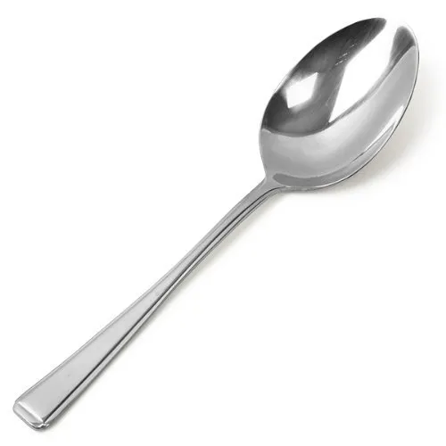
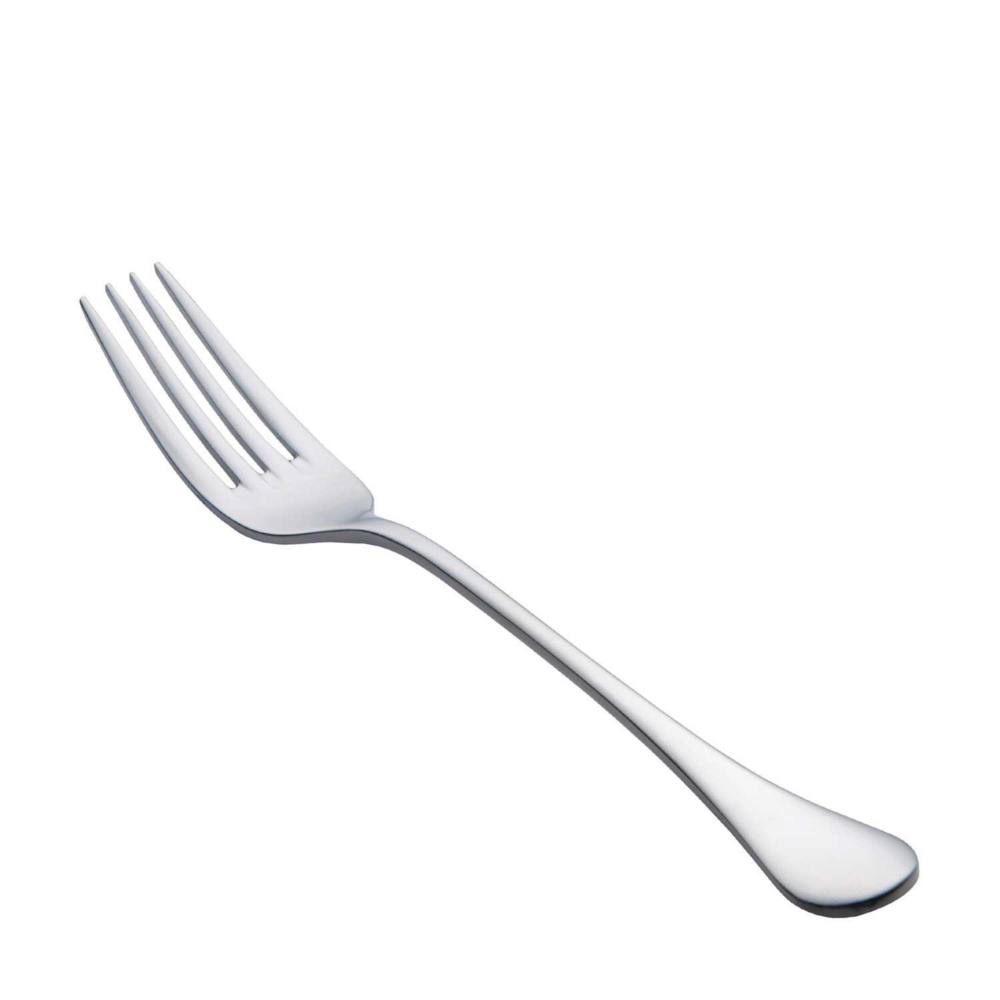

This is a SPOON
spoon, an implement consisting of a small shallow bowl-shaped receptacle supported by a handle, used for eating, serving, and cooking foods.

This is a FORK
a fork is a utensil, now usually made of metal, whose long handle terminates in a head that branches into several narrow and often slightly curved tines with which one can spear foods either to hold them to cut with a knife or to lift them to the mouth